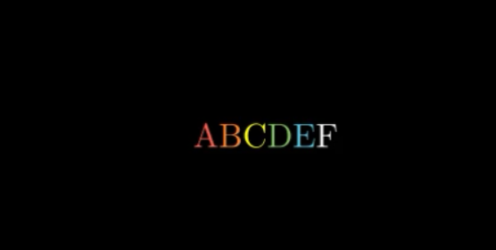

text数组¶
声明
早期Elteoremadebeethoven有个仓库和配套的youtude教学视频， Animation course with Manim ，小破站有搬运 BV1W4411Z7Zt ， 然后cai-hust学习并且做了相关的教程MarkDown笔记 cai-hust_manim-tutorial-CN ， 这部分不是我写的，我只是想把Markdown、pdf等资料整合编辑成方便的文档格式，以方便查阅使用Manim，cai-hust已授权，表示标明链接仓库就行。
text数组
在 animation显示操作 中所有的显示方法几乎都可以对数组成立，
如文字串：
class TextArray(Scene):
def construct(self):
text = TextMobject("A","B","C","D","E","F")
text[0].set_color(RED)
text[1].set_color(ORANGE)
text[2].set_color(YELLOW)
text[3].set_color(GREEN)
text[4].set_color(BLUE) #Hexadecimal color
self.play(Write(text))
self.wait(2)

还可以拼接为LaTeX串(此处不能用TextMobject代替，否则报错)：
class TexArray(Scene):
def construct(self):
text = TexMobject("A","{B","\\over","C}","D","E")
text[0].set_color(RED)
text[1].set_color(ORANGE)
text[2].set_color(YELLOW)
text[3].set_color(GREEN)
text[4].set_color(BLUE)
text[5].set_color(BLUE)
self.play(Write(text))
self.wait(2)
对于数组可以直接如同对单个object操作,如：
text.shift(UP)
注意：
text = TextMobject(string）是一维数组
当text = TextMobject(string1，string2，….)中所有的string均为字母的时候，text为二维数组但是每一个子数组大小仅为1
如果有任意一个string是多个字母则text是二维数组